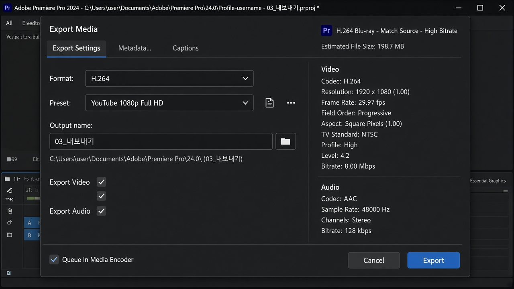

레슨 10
완성본을 파일로
컷이 끝났으면 시퀀스를 H.264 MP4로 뽑습니다. 유튜브·카톡·폰 재생에 가장 무난한 형식입니다.
목표. 검은 구멍과 오디오를 점검한 뒤, 03_내보내기 폴더에 MP4를 만듭니다.
내보내기 전에
- 시퀀스 시작이 첫 프레임인지 봅니다. 앞에 빈 공간이 있으면 클립을 맨 앞으로 Ripple 당깁니다.
- 끝도 마지막 컷에서 멈추는지 봅니다. 뒤에 쓸데없는 여백이 있으면 시퀀스가 길어진 채로 나갑니다.
- 처음부터 끝까지 재생합니다. 소리 끊김, 깜빡이는 검정, 잘못 덮어쓴 구간이 없는지 확인합니다.
- Ctrl+S로 저장합니다.

H.264로 보내기
- 내보낼 시퀀스를 타임라인에서 연 다음 Ctrl+M 또는 파일 → 내보내기 → 미디어.
- 형식은 H.264.
- 프리셋은 용도에 맞게: 유튜브라면 YouTube 1080p Full HD 계열. 그냥 보관이면 Match Source + High bitrate도 됩니다.
- 출력 이름을 정하고 위치는 03_내보내기로 지정합니다.
- 오디오가 켜져 있는지, 비디오/오디오 체크박스가 살아 있는지 봅니다.
- 내보내기를 누릅니다. Media Encoder로 보내도 결과는 같습니다.

프리셋 이름을 외울 필요는 없습니다. 해상도가 시퀀스와 같고, 확장자가 .mp4이면 입문용으로 충분합니다. 파일이 너무 크면 비트레이트를 낮추고, 깨져 보이면 높입니다.
인·아웃이 내보내기에 영향을 줄 때
시퀀스에 인·아웃이 남아 있으면 그 구간만 나갈 수 있습니다. 전체 영상을 보내려면 내보내기 창에서 범위를 전체 시퀀스로 두거나, 타임라인의 인·아웃을 지웁니다.
확인
다음 단계
컷이 익숙해지면 그때 가서 자막, 색, 음악 볼륨을 다루면 됩니다. 지금은 필요 없는 시간을 걷어 내고, 소리가 장면을 이어 주는 감각이면 충분합니다.